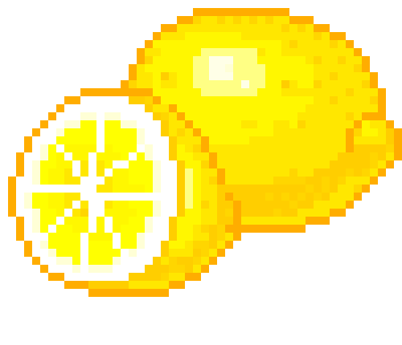
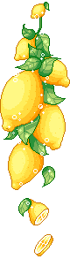

關於檸檬論壇
如題，這裡是超級檸檬愛好者的天地。不願透露姓名的網站管理員希望通過這個網站認識更多同好。歡迎有意者投稿，我們需要更多意見來改善我們的網站(｡･ω･｡)
推特 @lovelovelemon__
臉書 @superlemonlove_
~最新資訊~
 關於檸檬的100個秘密！【superlemon】竟不是美國貨！它的真正來源是？什麼是檸檬精？柠檬水的用途还有这么多！99%看到这篇文章都震惊了超宁：柠檬基因不属于地球
關於檸檬的100個秘密！【superlemon】竟不是美國貨！它的真正來源是？什麼是檸檬精？柠檬水的用途还有这么多！99%看到这篇文章都震惊了超宁：柠檬基因不属于地球
!***重要通知***！檸檬站會員將在3月20號開放登錄
“檸檬（學名：Citrus limon）為芸香科柑橘屬的一種，是原產於亞洲的常綠小喬木， 其果實為黃色橢圓狀。” —— 維基百科

站長介紹
姓名：lemonp
招募員工中
喜歡吃蘑菇 其實沒那麼喜歡吃檸檬